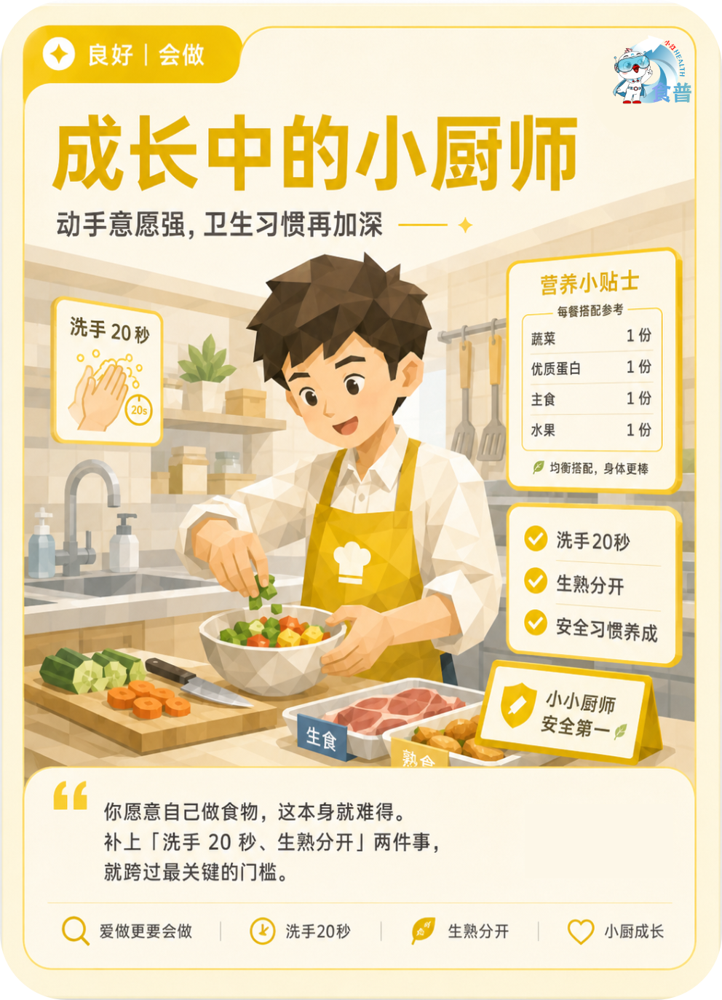

青少年与儿童
良好
会做
K08
成长中的小厨师
动手意愿强,卫生习惯再加深
你愿意自己做食物,这本身就难得。补上「洗手 20 秒、生熟分开」两件事,就跨过最关键的门槛。
手机端可点击“打开原图”后长按图片保存；也可以直接长按上方图卡保存。

动手意愿强,卫生习惯再加深
你愿意自己做食物,这本身就难得。补上「洗手 20 秒、生熟分开」两件事,就跨过最关键的门槛。
手机端可点击“打开原图”后长按图片保存；也可以直接长按上方图卡保存。